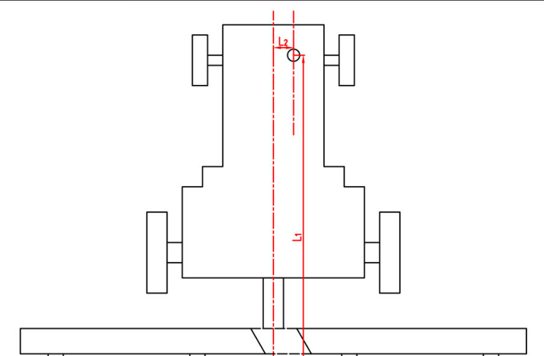

终端 A7 · CAN 已连接
处方图显示区
中间留白 · 接入 ArcGIS MapView
低量中量高量
运行 0/16
平均施肥 0.0 kg/亩
准确率 0%
绿色：启用红色：关断

施肥
播种
作业参数
cm
cm
cm
s
km/h
kg/亩
系统
测试模式
开启后可进入单体设置 · 进入单体设置 ›
保存实验数据
显示补偿位置
语音提示助手
播报设备状态、报错与一键检测提示
数值参数
N 次速度均值定速
目前设定值 × 200ms
颜色分级数
不包含 0 域
位置跟随视图区域
大小 × 10⁻⁶
串口设置（改后下次“开始”生效）
CAN 端口（电机总线）
选择检测到的串口
CAN 波特率
DB9 端口（RTK/GNSS）
选择检测到的串口
DB9 波特率
CAN 实时监控
> 监听 CAN 总线…
诊断
一键检测
自动扫速测试各电机与 RTK 信号，生成排肥机检测报告
处方图配置
步骤 1：选择文件 (.shp)
VariableFert.shp
步骤 2：选择渲染字段